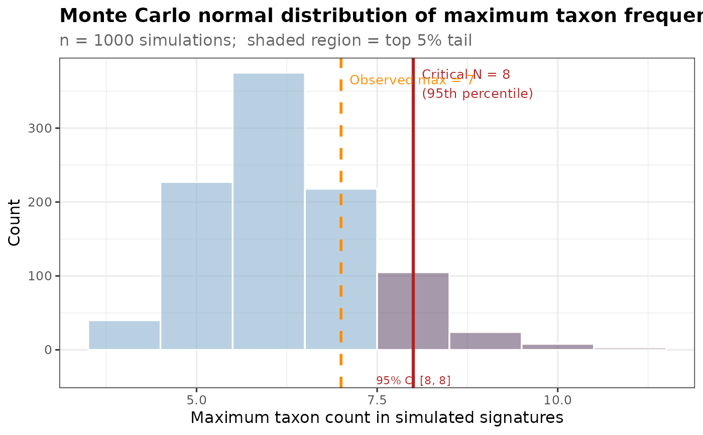

Visualise the Monte Carlo null distribution with threshold and CI
Source:R/montecarlo.R
plotCriticalN.RdPlots a density / histogram of the simulated max-counts from
getCriticalN, marks the critical threshold, shades the
rejection region, and adds a confidence-interval bar for the threshold.
Usage
plotCriticalN(
cn_result,
obs_max = NULL,
title = "Monte Carlo normal distribution of maximum taxon frequency",
xlab = "Maximum taxon count in simulated signatures",
fill_col = "steelblue",
alpha_fill = 0.25
)Arguments
- cn_result
The list returned by
getCriticalN.- obs_max
Optional integer. If supplied, an observed maximum frequency is marked with a vertical dashed line.
- title
Plot title.
- xlab
X-axis label.
- fill_col
Bar fill colour (default
"steelblue").- alpha_fill
Transparency of rejection-region shading (default 0.25).
Examples
full.dat <- bugsigdbr::importBugSigDB()
#> Using cached version from 2026-11-09 16:28:46
my.dat <- full.dat[full.dat$Curator == "Mst Afroza Parvin", ]
relevant.dat <- full.dat[full.dat$`Body site` %in% my.dat$`Body site`, ]
relevant.sigs <- bugsigdbr::getSignatures(my.dat)
my.sigs.increased <- relevant.sigs[grep("UP", names(relevant.sigs))]
my.siglengths <- sapply(my.sigs.increased, length)
cn_res <- getCriticalN(relevant.sigs, my.siglengths)
plotCriticalN(cn_res, obs_max = 7)
